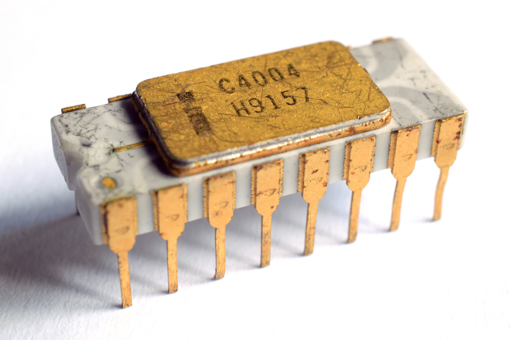
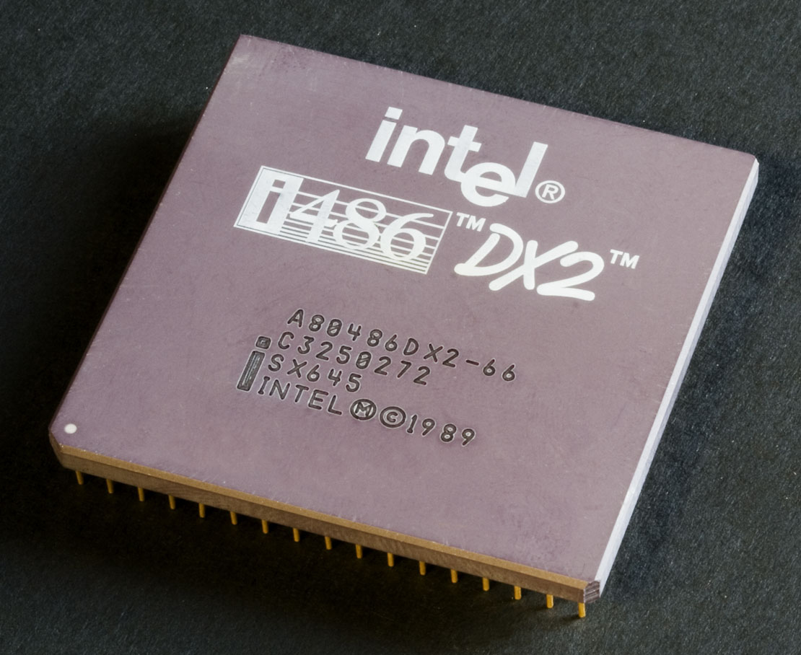

Modul 3 - Datamaskinen
Fra da til nå
De aller fleste vet at PC står for Personal Computer, eller personlig datamaskin på norsk. Men de første datamaskinene som ble bygget var langt fra personlige. De var store, tunge maskiner som ofte tok opp hele eller store deler av rom. De var ekstremt dyre og krevde gjerne et eget team med vitenskapspersonell for å operere og vedlikeholde maskinene.
ENIAC
Electronic Numerical Integrator and Computer var navnet på den aller første programmerbare datamaskinen. Den var Turing-komplett, digital og sies å kunne løse haugevis med numeriske operasjoner. Den ble tatt i bruk i 1946 med den hensikt å regne ut ballistiske missilbaner for den amerikanske hæren. ENIAC skal ha klart å regne ut baner som tok et menneske 20 timer å regne ut på knappe 30 sekunder. Det sier litt om hvor effektivt datamaskiner kan løse matematiske utregninger.
Hva Turing-kompletthet er kan du lese mer om her. Men i korte trekk betyr det at den kan utføre alt en standard programmerbar datamaskin kan gjøre. I enda kortere trekk betyr det at en kan programmere den akkurat sånn man vil.
Fra da til nå 2
Før i tiden var datamaskiner store investeringer og var omtrent bare å finne på universiteter. De ble hovedsaklig brukt til å utføre mange store og tunge utregninger på kort tid. Tidlige datamaskiner brukte vakuumrør til å flytte elektriske signaler fra ett sted i maskinen til et annet. Maskiner var også avhengige av at mennesker manuelt styrte strømmen dit den skulle.
Så til tross for at datamaskinene var programmerbare og raske til å regne ut matematiske problemer, så var det fortsatt en del fysisk menneskelig innblanding i bruk av datamaskinene.
Mikroprosessoren
Det kom en revolusjon innen dataverdenen på tidlig 70-tallet. Ingeniører hadde klart å lage en mikroskopisk versjon av de hittil store prosessorene. Intel skriver selv at deres første mikroprosessor, Intel 4004 skal ha hatt en størrelse på en fingernegl og en like stor datakraft som den første datamaskinen, som tok opp et helt rom (ENIAC).
De nye prosessorene kunne kjøre programmer slik de eldre, store prosessorene kunne. De kunne også lagre informasjon og håndtere data helt selv. Dette gjorde at datamaskiner kunne lages mindre, raskere og billigere.
En konsekvens av små, billige og kraftige prosessorer ser vi i dagens datamaskiner. Maskinene blir stadig mindre og lettere, samtidig som de blir raskere og billigere. Moore's Law tilsier at hvert andre år så dobles antall transistorer i en prosessor. Dette vil si at for hvert andre år, så vil nye prosessorer kunne yte dobbelt så bra som deres forgjengere.
I dag
PC'er er mer eller mindre allemanseie, i hvert fall hvis man tenker på de vestlige land. Internett har blant annet gjort slik at folk bruker mer tid på datamaskinene enn tidligere. Det er en utrolig stor nyttverdi av internett, både i jobb- og underholdningssammenheng m.m.
Det er også offentlige krav som tilsier at enkelte tjenester skal være tilgjengelig på nett. Eksempelvis Digipost, skattemelding (Altinn) og e-resept.
De aller fleste har flere datamaskiner. Gjerne en laptop, en mobiltelefon, et nettbrett og kanskje en spillkonsoll og/eller en stasjonær datamaskin.
Hovedkomponenter
Hovedkomponentene i en datamaskin er som følger:
- Prosessor eller CPU (Central Processing Unit) 
- Primærminne, eller RAM (Random Access Memory)
- Sekundærminne, eller HDD/SSD (Hard Disk Drive/Solid State Drive)
- (Man tar gjerne med grafikkort også, for å få GUI (grafisk brukergrensersnitt))


Alle disse komponentene blir (sammen med flere) plassert på, eller koblet til et hovedkort
Komponentenes oppgaver
Prosessor: Ta imot, regne på og sende elektriske impulser videre. Hastigheten en CPU jobber på (klokkefrekvens) er gitt i (Giga)Hz.
Primærminne: Lagre data i en kort periode. Er avhengig av strøm for å virke.
Sekundærminne: Lagre data over lang tid. Er ikke nødvendig å ha strøm, så lagringen er permanent. Selv når maskinen er avskrudd.
Grafikkort: Vise grafikkpunkter(pixler) på en skjerm.
Hovedkort: Koblingspunkt for de overnevnte komponenter, med andre viktige funksjonaliteter. Blant annet BIOS.
Bit og Byte
Vi har tidligere nevnt at datamaskiner bare forstår 0-er og 1-ere. Dette er hvordan vi beskriver de to fasene eletriske impulser tolkes av en datamaskin. Et 0-tegn betyr fravær av (eller ingen, altså 0) elektrisk signal. Mens et 1-tall betyr at det er elektrisk impuls. Vi sier da at 0 er av og 1 er på.
En bit har kun to mulige verdier. Enten 0 eller 1.
En byte er en samling av 8 bits eller biter
Eksempel: En bokstav kan ikke representeres ved hjelp av en bit, men det går ved bruk av en byte. Hvorfor? Det er fordi vi har flere verdier enn to i alfabetet vårt (29 forskjellige verdier = bokstaver).
YouTubevideo som forklarer bits og bytes